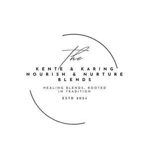

Trade Mark Journal No.2025/009 28 February 2025
UK00004161494 17 February 2025 (5,30)

- Class 5
- Herbal supplements; Medicinal herb infusions; Food supplements; Dietary food supplements.
- Class 30
- Drinks based on cocoa; Drinks based on chocolate; Beverages based on chocolate; Cinnamon [spice]; Cloves [spice]; Ginger [spice]; Nutmegs [spice]; Spice mixes; Cinnamon powder [spice]; Clove powder [spice]; Ginger [powdered spice]; Spices; Mixed spice powder; Baking spices; Mixed spices; Edible spices; Vanilla [flavoring] [flavouring]; Vanilla [flavoring] flavouring; Flavorings and seasonings; Allspice; Nutmeg; Flavourings and seasonings; Spices in the form of powders; Vanilla flavorings; Blends of seasonings; Cinnamon; Seasoning mixes; Seasonings; Vanilla flavourings for food or beverages; Vanilla flavourings for culinary purposes; Food seasonings; Coffee flavorings; Herbal teas; Herbal tea; Coffee substitutes; Herbal infusions [other than for medicinal use]; Preparations based on cocoa; Cocoa; Preparations for making beverages [cocoa based]; Beverages based on coffee substitutes; Beverages with a cocoa base; Cocoa mixes; Cocoa products; Preparations for making beverages [chocolate based]; Cocoa powder; Cocoa substitutes; Cocoa beverages; Beverages made from cocoa; Drinks containing cocoa; Coffee, teas and cocoa and substitutes therefor; Hot cocoa mix; Cacao powder; Chocolate powder; Hot chocolate; Vegan hot chocolate; Hot chocolate mixes; Chocolate truffles; Dairy-free chocolate; Chocolate coated nuts; Almonds covered in chocolate; Cocoa drinks; Cookies; Almond cookies; Cookie mixes; Shortbread biscuits; Brownies; Chocolate brownies; Chocolate biscuits; Shortbreads; Biscuits; Biscuits having a chocolate coating; Muffins; Savory biscuits; Chocolate; Vegan cakes.
Karina Howell-Davies